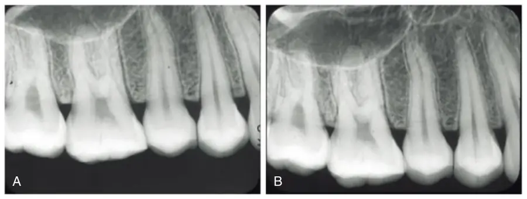
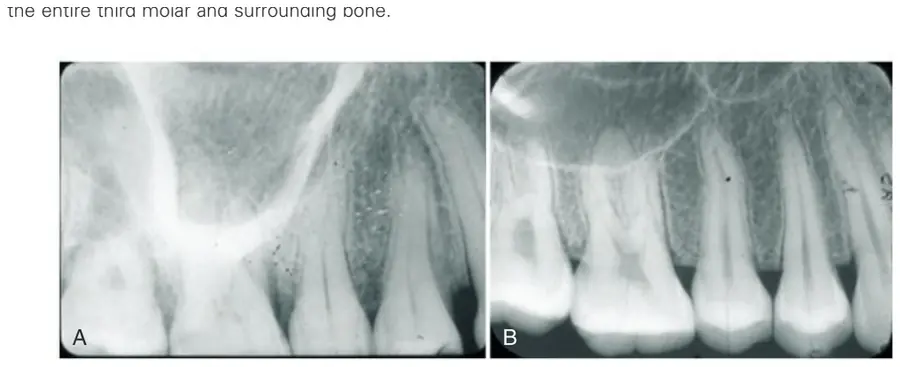

نسخه استخراجشده؛ ترجمه یا تأیید علمی انجام نشده است. وضعیت: captured
خطاهای رایج دو خانوادهاند: «خطاهای ناشی از جابهجایی نادرست گیرنده» و «خطاهای ناشی از زاویهگذاری نادرست پرتو ایکس». این اسلاید خانوادهی نخست است.

خطای ۱ — گیرنده بیش از حد به سمت صفحهی اکلوزال: «آپکسهای پرمولر و استخوان پریاپیکال دیده نمیشوند.» و در جایگذاری درست، «هم میز اکلوزال و هم نواحی پریاپیکال در بر گرفته میشوند».
و چرا این خطا مهم است؟ چون معیار کیفیت پریاپیکال، دیدن تمام طول ریشهها و دستکم ۲ میلیمتر استخوان پریاپیکال است. این خطا دقیقاً همان معیار را نقض میکند.
و اصلاحش: گیرنده باید عمیقتر در وستیبول لینگوال یا سقف کام جای گیرد — همان اصل جایگذاری تکنیک موازی.
خطای ۲ — گیرنده بیش از حد قدامی برای پروجکشن مولر: «مولر سوم تنها تا حدی در بر گرفته شده است.» و در جایگذاری درست، «رادیوگرافی اکنون کل مولر سوم و استخوان اطرافش را در بر میگیرد».
و اصلاحش با یک ترفند عملی: برای پروجکشن مولر ماگزیلا: «با قرار دادن نگهدارنده طوری که نیمی از رینگ همراستایی تیوب پشت کانتوس خارجی چشم باشد، معمولاً میتوان مولرها و بخشی از توبروزیتی را در تصویر گنجاند».
و برای مولر مندیبل: «لبهی قدامی گیرنده باید حدود میانهی پرمولر دوم باشد» تا «نیمهی دیستال پرمولر دوم و هر سه مولر دائمی مندیبل» در تصویر بیفتند.
و یک قاعدهی تصمیم که تکرار بیمورد را کم میکند: اگر مولر سوم نهفته در ناحیهای غیر از توبروزیتی باشد، یا ضایعهای دیستال به مولر سوم باشد، «یک پروجکشن ابلیک دیستال یا نماهای خارجدهانی — پانورامیک یا نمای جانبی ابلیک فک — ممکن است لازم باشد». یعنی مشکل با تکرار همان کلیشه حل نمیشود؛ روش باید عوض شود.
و یک نکته دربارهی ناحیهی بیدندان: «اگر ناحیهی مولر بیدندان باشد، گیرنده را بهاندازهی کافی خلفی قرار بده تا ناحیهی رترومولار در معاینه گنجانده شود.»
خطای ۳ — زاویهی عمودی بیش از حد: «زائدهی زیگوماتیک ماگزیلا روی آپکسهای مولر سوپرایمپوز میشود و میز اکلوزال روی تصویر پروجکت نمیشود.» و در زاویهی درست، «میز اکلوزال گنجانده میشود و نواحی پریاپیکال مولرها بدون سوپرایمپوزیشن بهتر دیده میشوند».

و این خطا با درس پیشین گره میخورد: زائدهی زیگوماتیک باکال است، و «با افزایش زاویهی عمودی پرتو، اکلوزالیتر روی دندانها پروجکت میشود». پس دیدن زیگوما روی آپکسها، خودش علامت زاویهی عمودی زیاد است.
و در تکنیک نیمساز، همین خطا نشانهی دیگری هم دارد: کوتاهشدگی تصویر. پس زاویهی عمودی زیاد، دو اثر همزمان میسازد: کوتاهشدگی و سوپرایمپوزیشن زیگوما.
خطای ۴ — زاویهی افقی نادرست: «سوپرایمپوزیشن مینا روی سطوح پروگزیمال دندانهای پرمولر و مولر.» و در زاویهی درست، «پرتو از میان کانتکتهای بیندندانی هدایت میشود» و «جدایی سطوح پروگزیمال، ارزیابی پوسیدگی و تحلیل استخوان بیندندانی را ممکن میکند».
و همین توضیح میدهد چرا این خطا بایتوینگ را بیارزش میکند: هر سه هدف تشخیصی بایتوینگ — پوسیدگی پروگزیمال، پوسیدگی ثانویه، و استخوان بیندندانی — در همان ناحیهایاند که همپوشانی میپوشاند.
و معیار پذیرش: «همپوشانی سطوح پروگزیمال مجاور باید کمتر از یکسوم ضخامت مینا باشد.»
خطای ۵ — همراستایی نادرست پرتو و گیرنده (کونکات): «مخروط کولیماتور روی گیرنده مرکز نشده و بیش از حد خلفی قرار گرفته است. توجه کن به یک «کونکات» در یکسوم قدامی تصویر، جایی که گیرنده اکسپوز نشده است.» و در همراستایی درست، «پرتو اکنون کل سطح گیرنده را اکسپوز میکند».
و راه پیشگیریاش یک جمله است: استفاده از نگهدارنده با رینگ راهنمای بیرونی، و اطمینان از اینکه «انتهای رینگ هدفگیر تیوب همسطح یا موازی با رینگ راهنما» است.
و جمعبندی عیبیابی — از روی تصویر به علت:
و پیش از هر تکرار، همان قاعدهی طلایی را به یاد بیاور: «اگر آن اطلاعات گمشده روی نمای دیگری موجود باشد، تکرار لازم نیست.» هر تکرار، دوز افزوده برای بیمار است.